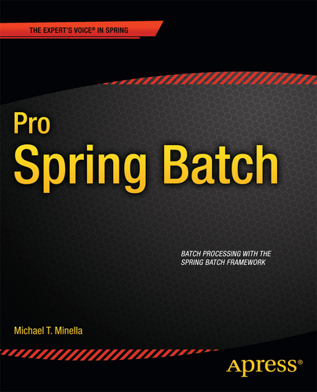
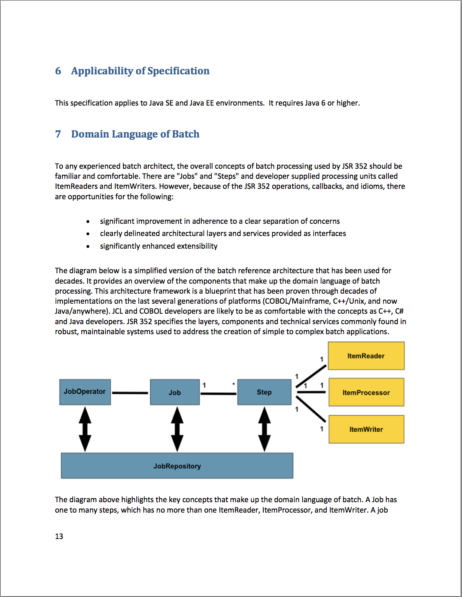
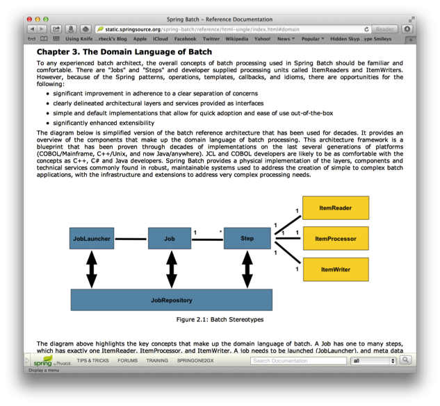
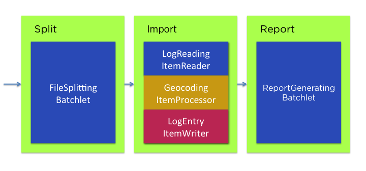
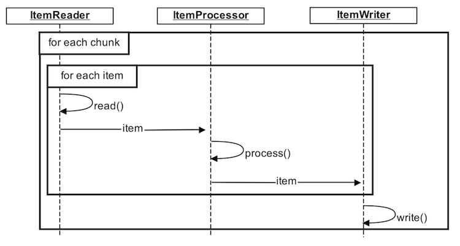
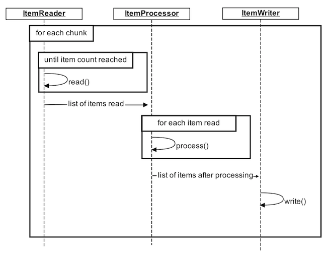

JSR-352, Spring Batch, and You
Created by Michael T Minella / @michaelminella
Who is this guy?
- Author of Pro Spring Batch
- Member of the expert group for JSR-352
- Project lead for Spring Batch
- Twitter: @michaelminella
I do a lot of batch ;)
No need to take notes!
- These talks are being recorded...
- These slides and code are on Github
Find it all here
?
3
JSR-352
Spring Batch's implementation of JSR-352
Spring Batch beyond JSR-352
Expectations
- Basic knowledge of Spring
- Basic knowledge of Spring Batch
? when you have them
JSR-352
JSR-352 introduces an exciting new Java specification for building, deploying, and running batch applications.
Spring's involvement
Spring Batch is a leader in the space
Results of the spec?

Structurally the same
3
- API for building batch components
- A DSL for configuring batch components
- A contract of how batch components interact
High level differences
Spring Batch Job
<job id="personJob">
<step id="step1">
<tasklet>
<chunk commit-interval="5"
reader="itemReader"
processor="itemProcessor"
writer="itemWriter" />
</tasklet>
</step>
</job>
JSR-352 Job
<job id="personJob">
<step id="step1">
<chunk item-count="5">
<reader ref="itemReader"/>
<processor ref="itemProcessor"/>
<writer ref="itemWriter"/>
</chunk>
</step>
</job>
<!-- Spring Batch -->
<job id="personJob">
<step id="step1">
<tasklet>
<chunk commit-interval="5"
reader="itemReader"
processor="itemProcessor"
writer="itemWriter"/>
</tasklet>
</step>
</job>
<!-- JSR-352 -->
<job id="personJob">
<step id="step1">
<chunk item-count="5">
<reader ref="itemReader"/>
<processor ref="itemProcessor"/>
<writer ref="itemWriter"/>
</chunk>
</step>
</job>
?
Dependency Injection
- Foundational technology of Spring Batch
- Not required with JSR-352
References in JSR-352
<job id="personJob">
<step id="step1">
<chunk item-count="5">
<reader ref="itemReader"/>
<processor ref="itemProcessor"/>
<writer ref="itemWriter"/>
</chunk>
</step>
</job>
References point to 1 of 3 places
- Spring bean
- batch.xml definition
- The class itself
Spring bean
<bean id="itemWriter" class="org.springframework.batch.item.xml.StaxEventItemWriter">
<property name="resource" ref="outputFile" />
<property name="marshaller" ref="customerMarshaller" />
<property name="rootTagName" value="customers" />
</bean>
batch.xml
<batch-artifacts xmlns="http://xmlns.jcp.org/xml/ns/javaee">
<ref id="itemReader" class="org.sf.jsr.demo.ItemReader" />
<ref id="itemProcessor" class="org.sf.jsr.demo.ItemProcessor" />
<ref id="itemWriter" class="org.sf.jsr.demo.ItemWriter" />
</batch-artifacts>
The class itself
<job id="personJob">
<step id="step1">
<chunk item-count="5">
<reader ref="org.sf.jsr.demo.ItemReader"/>
<processor ref="org.sf.jsr.demo.ItemProcessor"/>
<writer ref="org.sf.jsr.demo.ItemWriter"/>
</chunk>
</step>
</job>
Properties
- Spring injects them on bean definitions
- JSR-352 injects properties from the job definition
- JSR-352 properties are Strings only
Spring Batch Job
<job id="formatJob">
<step id="step1">
<tasklet>
<chunk reader="fileReader"
writer="xmlWriter"
commit-interval="#{jobParameters['commit.interval']}"/>
</tasklet>
</step>
</job>
JSR-352 Job
<job id="personJob">
<step id="step1">
<chunk item-count="#{jobParameters['commit.interval']}">
<reader ref="fileReader">
<properties>
<property name="fileName" value="#{jobParameters['input.fileName']}"/>
</properties>
</reader>
<writer ref="xmlWriter">
<properties>
<property name="fileName" value="#{jobParameters['output.fileName']}"/>
</properties>
</writer>
</chunk>
</step>
</job>
Injection of properties
@Inject
@BatchProperty
public String fileName;
@Inject
@BatchProperty(name="otherProperty")
public String otherProperty;
?
Let's build an app!
Logs of a viral video
- Released in 2003.
- Downloaded 1.1 million times the first 2 weeks
- Since been downloaded 40 million times since it was moved to YouTube
- 2008, Andy Baio posted the Apache logs for the first 6 months
- File is 1.6 GB unzipped and available via BitTorent
- File was originally called "ghyslain_razaa.wmv"
- File was later renamed to "Star_Wars_Kid.wmv"
Who was watching this video?
Our Job
Step Processing Models
Batchlet
Batchlet = StoppableTasklet
public interface Tasklet {
RepeatStatus execute(StepContribution contribution,
ChunkContext chunkContext) throws Exception;
}
public interface StoppableTasklet extends Tasklet {
void stop();
}
public interface Batchlet {
public String process() throws Exception;
public void stop() throws Exception;
}
Step 1...split the file
Launching
JobOperator
JobOperator jobOperator = BatchRuntime.getJobOperator();
// start
long jobExecutionId = jobOperator.start("myJob", new Properties());
// restart
long newJobExecutionId = jobOperator.restart(jobExecutionId, new Properties());
// stop
jobOperator.stop(jobExecutionid);
Chunk processing
Spring Batch
Spring Batch Really
JSR-352
Chunk Related Interfaces
- ItemReader
- ItemProcessor
- ItemWriter
Checkpoints
- Item
- Custom
Step 2...import the file
Error handling
Skip
<job id="skip" xmlns="http://xmlns.jcp.org/xml/ns/javaee" version="1.0">
<step id="step1">
<chunk skip-limit="3">
<reader ref="retryableListReader"/>
<writer ref="fileWriter"/>
<!-- Skippable exceptions -->
<skippable-exception-classes>
<include class="java.lang.RuntimeException"/>
</skippable-exception-classes>
</chunk>
</step>
</job>
Retry
<job id="retry" xmlns="http://xmlns.jcp.org/xml/ns/javaee" version="1.0">
<step id="step1">
<chunk retry-limit="3">
<reader ref="retryableListReader"/>
<writer ref="fileWriter"/>
<!-- Retryable exceptions -->
<retryable-exception-classes>
<include class="java.lang.RuntimeException"/>
</retryable-exception-classes>
</chunk>
</step>
</job>
Read Retries
- Spring Batch hasn't supported read retries
- JSR-352 allows read retries
- Existing Spring Batch readers won't support read retry with 3.0
Scaling
Splits
Same as Spring Batch
Partitioning
- Executes chunks or multiple instances of Batchlets in parallel
- Two configuration options
- Hardcoded in XML
- PartitionMapper
- Adds two additional concepts...
Partition Reducer
- Provides a hook for compensating logic upon failure
- Really just a specialized StepListener/StepExecutionListenr
Partition Collector/
Analyzer
- Collector collects data from batch artifacts
- Analyzer allows the ability to set ExitStatus after a partitioned step
Spring Batch's
Implementation
Spring Batch Status
- Released 3.0.0.M2 last night
- Passes > 50% of the TCK tests
- 3.0 will be JSR-352 compliant
"Raw" JSR-352 version
- Classes: 8
- Lines of custom code: 826
3
- API for building batch components
- A DSL for configuring batch components
- A contract of how batch components interact
?
Components!!!
JSR-352 provides 0
implementations
Item Readers
- AggregateItemReader
- AmqpItemReader
- FlatFileItemReader
- HibernateCursorItemReader
- HibernatePagingItemReader
- IbatisPagingItemReader
- ItemReaderAdapter
- JdbcCursorItemReader
- JdbcPagingItemReader
- JmsItemReader
- JpaPagingItemReader
- ListItemReader
- MongoItemReader
- Neo4jItemReader
- RepositoryItemReader
- StoredProcedureItemReader
- StaxEventItemReader
Item Writers
- AmqpItemWriter
- CompositeItemWriter
- FlatFileItemWriter
- GemfireItemWriter
- HibernateItemWriter
- IbatisBatchItemWriter
- ItemWriterAdapter
- JdbcBatchItemWriter
- JmsItemWriter
- JpaItemWriter
- MimeMessageItemWriter
- MongoItemWriter
- Neo4jItemWriter
- PropertyExtractingDelegatingItemWriter
- RepositoryItemWriter
- StaxEventItemWriter
Same app...Spring-ified
Comparison
"Raw" JSR-352 version
- Classes: 8
- Lines of custom code: 826
Spring JSR-352 version
- Classes: 5
- Lines of custom code: 596
Beyond JSR-352
Spring!
Type safe properties
No Inheritence
Scalability
JSR-352 is single JVM only
Spring Batch scales beyond 1 JVM
Remote Chunking

Remote Partitioning

Batch doesn't occur
in a vacuum
Launching jobs via messages
Spring Hadoop
Spring XD
?
Find this deck and demo code:
Keep in touch!
- Michael Minella
- Twitter: @MichaelMinella
- Github: mminella
- Spring Batch
- Site: Spring Batch
- Session replays on YouTube: YouTube
- Spring
- Site: Spring IO